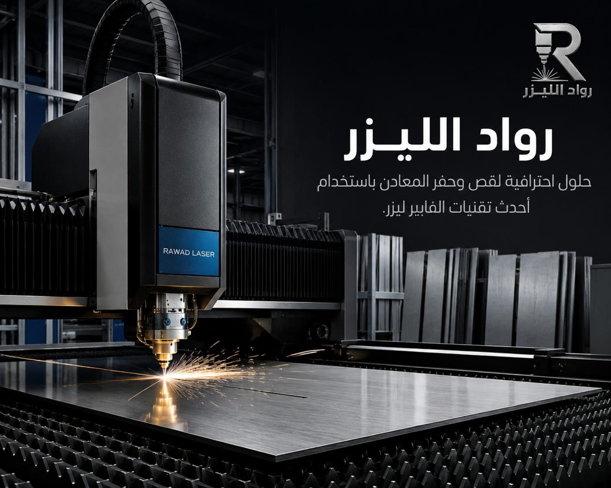

القص بالليزر
قص الصفائح بمسار دقيق مطابق للمخطط، مع ترتيب القطع على اللوح لتقليل الهدر.
تفاصيل خدمة القصليس كل مشروع يحتاج ستانلس، ولا كل قطعة تصلح من الحديد. نساعدك على اختيار المعدن الأنسب لأداء مشروعك وميزانيته، ثم نصنّعه: قص، ثني، لحام، تجميع، وتشطيب — بمواصفة واحدة ومسؤولية واحدة.

تطبيقات لها صفحات مستقلة
أكثر ما نراه من هدر في المشاريع المعدنية ليس في التنفيذ بل في الاختيار: قطعة داخلية جافة تُنفَّذ من ستانلس 316 فتتضاعف تكلفتها بلا فائدة، أو قطعة خارجية معرّضة للمطر تُنفَّذ من حديد بلا حماية فتصدأ خلال أشهر ويُعاد تصنيعها من جديد. القرار الصحيح يحتاج سؤالين فقط: أين ستعمل القطعة؟ وما الحمل الواقع عليها؟
لهذا نبدأ من الاستخدام لا من المعدن. أرسل لنا وصف القطعة ووظيفتها والبيئة المحيطة، ونرشّح لك المعدن والسماكة والحماية المناسبة — وإن كان الخيار الأوفر يكفي لاحتياجك سنقوله لك بوضوح ولن نبيعك معدناً أغلى لأنه يزيد قيمة الفاتورة.
بعد الاختيار تبدأ سلسلة التصنيع نفسها لكل المعادن: قص بالليزر بمسار دقيق، ثني بزوايا مضبوطة، لحام مناسب لنوع المعدن، ثم تشطيب وفحص قبل التسليم. الفرق يكون في التفاصيل: حرارة اللحام، نصف قطر الثني، ومعالجة السطح — وهي التفاصيل التي تحدّد إن كانت القطعة ستدوم أم لا.
خمس مراحل يمكنك طلبها كاملة أو طلب ما تحتاجه منها فقط.
قص الصفائح بمسار دقيق مطابق للمخطط، مع ترتيب القطع على اللوح لتقليل الهدر.
تفاصيل خدمة القصتحويل القطع المسطّحة إلى أشكال مجسّمة بزوايا مضبوطة ونصف قطر مناسب لكل معدن.
تفاصيل خدمة التشكيللحام مناسب لنوع المعدن وسماكته، أو تثبيت ببراغي إن كان التصميم يحتاج فكّاً لاحقاً.
تركيب المكوّنات والملحقات والتحقق من التوافق والاستقرار قبل التسليم كوحدة واحدة.
إزالة الحواف، تلميع، وتنسيق الطلاء أو الجلفنة حسب المعدن والبيئة المتوقعة.
تفاصيل التشطيب والجودةأرقام تسلسلية ورموز وشعارات منقوشة على القطع لتتبّع الإنتاج أو للهوية البصرية.
تفاصيل الحفر بالفايبرابدأ من العمود الأول: اعرف حالتك، واقرأ التوصية.
| حالتك | المعدن الموصى به | السبب |
|---|---|---|
| قطعة داخلية جافة، الميزانية مهمة | حديد أسود مع طلاء | أعلى قوة بأقل سعر، والصدأ غير محتمل في بيئة جافة محمية. |
| سطح يلامس غذاء أو ماء | ستانلس 304 | سطح صحي يسهل تعقيمه ولا يتفاعل مع الغذاء ولا يصدأ. |
| قطعة خارجية قريبة من البحر | ستانلس 316 | مقاومة أعلى للكلوريدات في جو جدة الساحلي المالح. |
| الوزن هو القيد الأساسي | ألمنيوم | نحو ثلث وزن الحديد، ويقلّل حمل التثبيت وتكلفة النقل. |
| أعمال تكييف ودكتات | صفيحة مجلفنة | المعيار العملي في السوق: حماية زنك بسعر معقول. |
| مظهر فاخر ولمسة دافئة | نحاس أو براص | لون ذهبي مميّز لا يعطيه أي معدن رمادي، ويرفع القيمة البصرية. |
غير متأكد؟ اشرح لنا القطعة والبيئة والحمل، ونرشّح لك المعدن الأنسب قبل التسعير — الاستشارة جزء من الخدمة لا خدمة إضافية.
 أنواع المعادن
أنواع المعادن قطع صناعية
قطع صناعية بيئة التنفيذ
بيئة التنفيذ
مرحلة القص مرحلة الثني
مرحلة الثني قطع جاهزة
قطع جاهزةالصور نماذج وتصورات بصرية توضح إمكانيات الخدمة.
قطع بديلة مطابقة للأصل أو محسّنة عنه بمعدن أنسب لظروف التشغيل.
هياكل حاملة وأغلفة حماية بمقاسات وأحمال محسوبة لكل تطبيق.
طاولات وأرفف وواجهات عرض تجمع بين معدنين أحياناً: هيكل حديد وسطح ستانلس.
قواعد وألواح وصل وعناصر تكسية للمشاريع، بمقاسات الموقع الفعلية.
أخبرنا ما الذي تحتاجه القطعة أن تفعله وأين ستعمل — قبل الحديث عن المعدن.
نرشّح المعدن والسماكة والحماية، ونشرح لك الفرق في التكلفة والعمر بين الخيارات.
قص ثم ثني ثم لحام وتجميع حسب ما يتطلّبه التصميم، مع متابعة الجودة بين المراحل.
قياس ومطابقة مع المخطط، وتشطيب نهائي، وتسليم في الموعد المتفق عليه.
أكثر من عشرة معادن وخدمات متعدّدة، فلا تحتاج التنسيق بين أكثر من مورّد.
نرشّح الأوفر إن كان يكفي احتياجك، ولا نبيعك معدناً أغلى بلا سبب فني.
من قطعة واحدة إلى دفعات متكرّرة لمشاريع مستمرة — بنفس أسلوب المتابعة.
كل المراحل تحت جهة واحدة، فلا تُلقى مسؤولية الخطأ بين موردين.
وحدات كاملة من الستانلس بتشطيب مقاوم للصدأ والاستخدام الشاق.
اذهب إلى الصفحةالقطع الحاملة والهياكل بأفضل نسبة قوة إلى سعر.
اذهب إلى الصفحةالخيار الخفيف المقاوم للتآكل بلا حاجة إلى طلاء.
اذهب إلى الصفحةأرسل لنا وصف القطعة ومكان عملها والحمل الواقع عليها، ونرشّح لك المعدن والسماكة. لا تحتاج معرفة تقنية مسبقة — هذا جزء من عملنا، وسنشرح لك الفرق في التكلفة والعمر بين الخيارات لتقرّر بنفسك.
نعم في كثير من الحالات، مثل هيكل من الحديد المطلي مع سطح ستانلس. لكن دمج معادن مختلفة في بيئة رطبة قد يسبّب تآكلاً جلفانياً عند نقطة التلاقي، ونتعامل مع ذلك بفصل مناسب — ونخبرك إن كان التصميم يحتاج تعديلاً.
نعم. يمكنك طلب القص فقط لتتولّى بقية المراحل بنفسك، أو طلب الدورة الكاملة حتى التسليم النهائي. حدّد ما تحتاجه ويُسعّر على هذا الأساس.
المعادن الصناعية الشائعة كلها متاحة عادةً. أما المعادن الخاصة جداً أو السبائك النادرة فتحتاج تأكيداً مسبقاً للتوفّر والقابلية — أرسل المواصفة ونجيبك بوضوح بنعم أو لا قبل أن تنتظر.
لا تحتاج تحديد المعدن مسبقاً — وصف الاستخدام والبيئة يكفي لنبدأ.
أرسل وصف القطعة والبيئة، ونرشّح لك المعدن والسماكة قبل أن نسعّر.